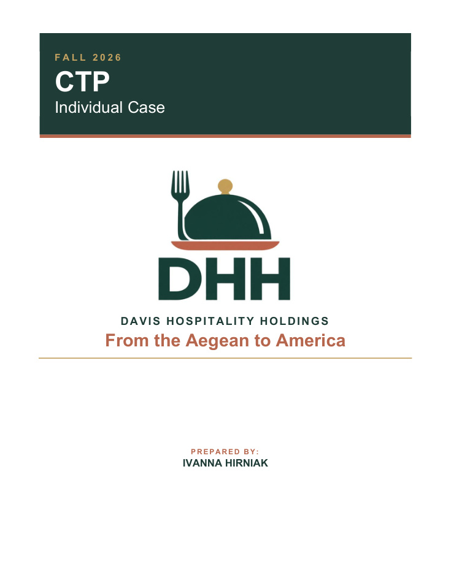
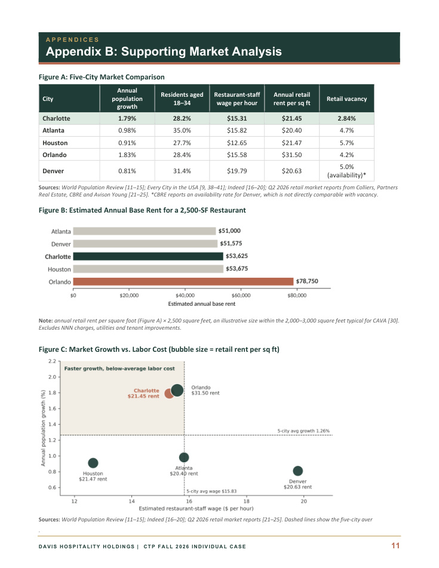

The U.S. Expansion Question
An individual market-entry case where I compared five cities to recommend a U.S. launch for an international restaurant group.
Where should the business expand?
For my Consulting Training Program, I worked on an individual academic case about a fictional international restaurant group entering the U.S. market. I needed to recommend a restaurant concept and a city that could support its launch.
Comparing five U.S. cities
I compared Charlotte, Atlanta, Houston, Orlando, and Denver using population trends, customer demographics, restaurant labor costs, retail space, competition, and supply-chain factors. I wanted to understand both the opportunity and the challenges of operating in each market.
Karpe Aegean Grill in Charlotte
I recommended launching Karpe Aegean Grill, a Greek and Mediterranean fast-casual concept, in Charlotte. I also recommended mobile ordering, a rewards program, and testing demand before a larger expansion.
Market comparison and recommendations


What I took away from this project
This project helped me learn how to compare research from different sources and turn the findings into a clear business recommendation. I also got better at thinking about costs, customers, and risks together.